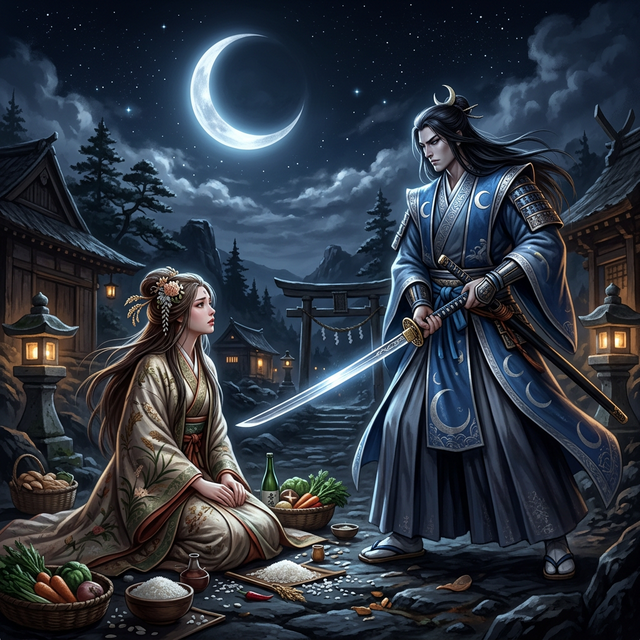

語り部は──ここで少し、声のトーンを変えさせてもらう。
第一部では世界が生まれた。イザナギとイザナミが愛し合い、創り、壊し、そして永遠に別れた。三貴子が涙の中から生まれた。──ずいぶん重い幕開けだった。
さて、第二部では──その三貴子の物語が始まる。太陽と月と嵐。三人の中で最も影が薄い──月から、始めよう。
＊
月読命（ツクヨミ）は──静かな神だった。
三貴子の中で、最も語られることの少ない神。姉アマテラスの眩い光にも、弟スサノオの激しい嵐にも、ツクヨミはかき消された。銀色の月光は、太陽の前では見えず、嵐の中では霞む。
しかし──ツクヨミは存在していた。静かに。確実に。
夜の世界を治める神。月光は──太陽のように世界を照らしはしない。しかし──闇の中で、かすかに道を示す。旅人が迷った時──月を見上げる。月は何も言わない。ただ──そこにいる。
ツクヨミの顔は──美しかった。銀色の肌に──感情を読ませない瞳。微笑まない。怒りもしない。ただ──「正しい」ことを──静かに実行する。
正しさ。
それがツクヨミの──唯一つの価値基準だった。
＊
ある日──アマテラスがツクヨミに命じた。
「──保食神（ウケモチ）のもとへ行って──もてなしを受けてきなさい」
保食神──食物を司る女神。アマテラスの代理として、ツクヨミがウケモチのもとを訪れることになった。
ウケモチは──華やかな女神だった。ツクヨミとは正反対。声が大きく、笑顔が多く、客人をもてなすことに情熱を傾ける。
「──まあ、月読様！ 遠路はるばるよくいらっしゃいました！」
ツクヨミは──小さく頷いた。
「──ご馳走を用意しますね。お待ちくださいな」
ウケモチは──振り返った。
そして──口から、米を吐いた。
比喩ではない。文字通り──口から白い米粒を吐き出した。次に──海の方を向き、口から魚を吐いた。鯛、鮪、鮭──様々な魚が、口から溢れ出た。最後に──口から獣の肉を吐き出した。
ウケモチの体は──食物を生み出す器だった。体内で穀物が育ち、魚が泳ぎ、獣が育つ。それを口から出し──客に供する。それがウケモチの──もてなし方だった。
テーブルに──豪華な食事が並んだ。白い飯、焼いた魚、切り分けた肉。湯気が立ち、いい匂いが──部屋に満ちた。
「──どうぞ、召し上がれ！」
ウケモチは──得意げに言った。
ツクヨミは──料理を見た。
見た。
そして──見えてしまった。料理が──口から吐き出されたものであることを。美しく盛り付けられた皿の上の飯が──さっき口の中にあったことを。魚が──唾液にまみれていたことを。
──汚い。
ツクヨミの顔色が──変わった。銀色の瞳に──嫌悪が走った。
「──口から吐き出したものを──私に食べさせるのか」
「──え？ でも──これが私のもてなし方で──」
「──汚らわしい」
ツクヨミは──剣を抜いた。
一刀で。
ウケモチを──斬った。
＊
ウケモチは──死んだ。
しかし──死体から、新しいものが生まれた。頭から牛が。額から粟が。眉から蚕が。目から稲が。腹から麦が。陰部から──大豆が。
食物の神は──死んでなお、食物を生み出し続けた。
ツクヨミは──それを見ていた。剣を持ったまま。ウケモチの死体から生まれる穀物と生き物を──銀色の瞳で──ただ見ていた。
──正しいことをした。
──汚い食べ物を──姉に報告するわけにはいかない。
──だから──殺した。
──正しかった。
──正しかったはず──
アマテラスに報告した時──ツクヨミは、姉が微笑んでいないことに気づいた。
「──殺したのか」
「──汚らわしいものを出されたので」
「──殺す必要があったのか」
「──正しいことを──」
「──正しい？」
アマテラスの声が──冷えた。太陽の女神の声が──月のように冷たくなった。
「──ウケモチは──確かに不作法だったかもしれない。しかし──彼女なりのもてなしだった。彼女にとっては──あれが最上の料理だった。それを『汚い』と──斬り捨てた」
「──しかし──」
「──あなたとは──もう会わない」
その一言で──昼と夜が分かれた。
太陽と月が──永遠に、同じ空にいられなくなった。アマテラスが昼を照らし、ツクヨミが夜に追いやられた。もう二度と──姉の顔を、同じ空から見ることはできない。
ツクヨミは──反論しなかった。弁明もしなかった。
しかし──夜の空に昇った時──ほんの一瞬、月が──欠けた。
翌朝──アマテラスはそれに気づかなかった。太陽が昇る頃には、月は見えない。
ツクヨミは──一人で夜の番をしながら、考え続けた。
──正しかったのだろうか。
──正しくなかったのだろうか。
──正しさとは──何だったのだろうか。
月は──答えを出さない。ただ──夜空で、静かに光り続ける。
*次回、第12話「嵐の神」*
*三貴子の末弟──スサノオ。泣くことしかできない神。*
*母を求め、父に追放され──姉に別れを告げに行く。*
